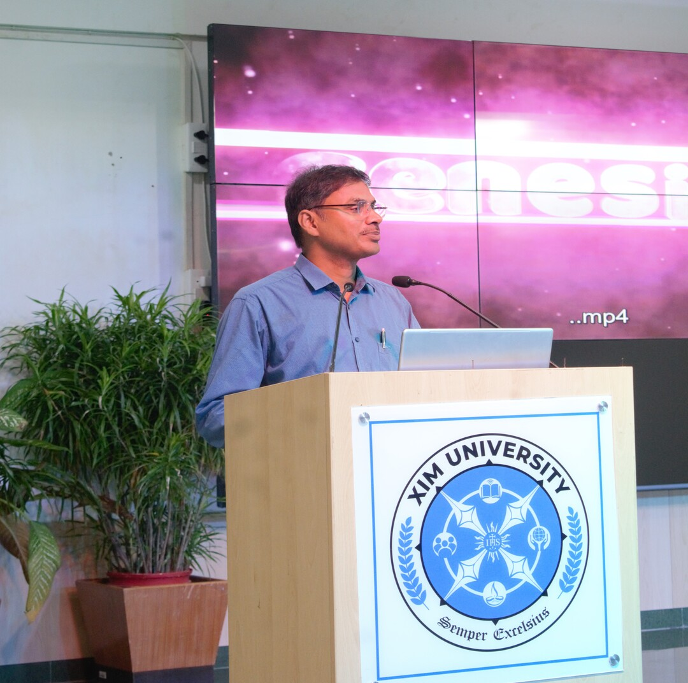
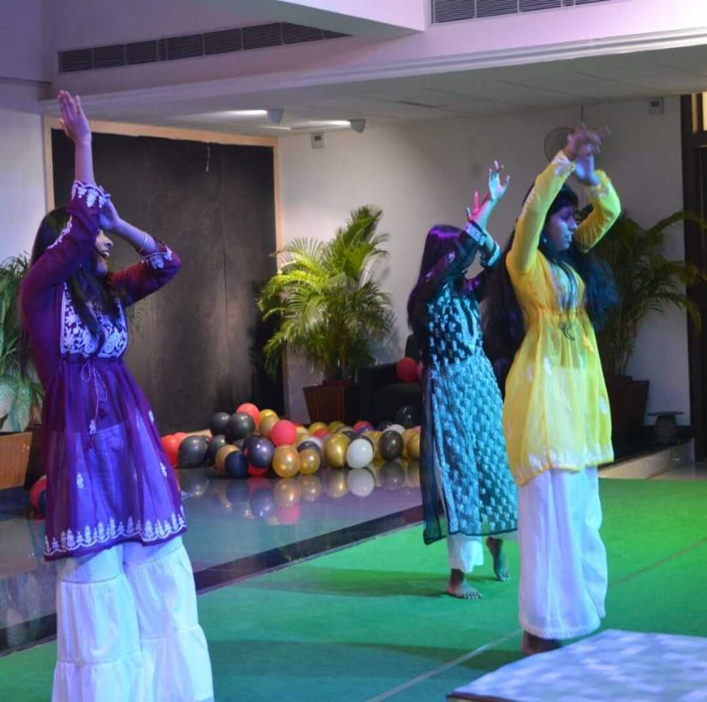
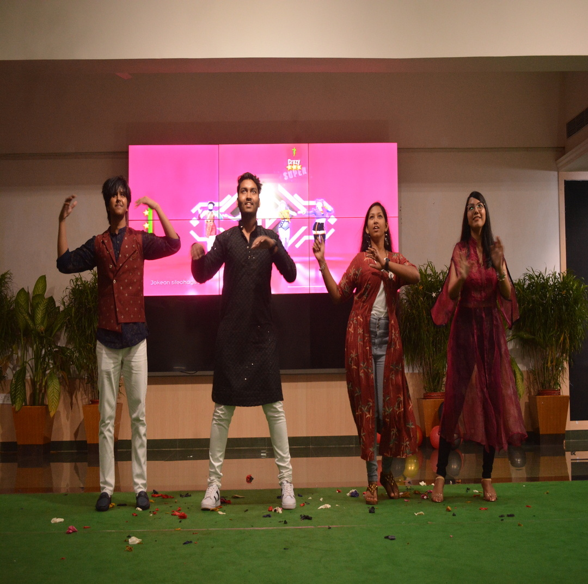
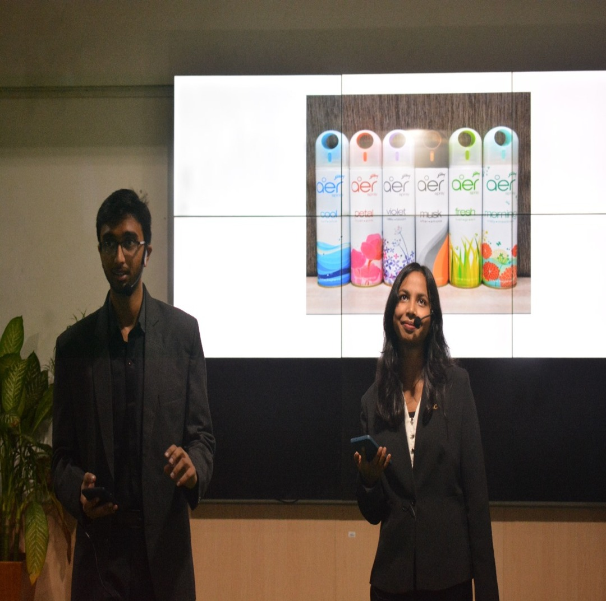
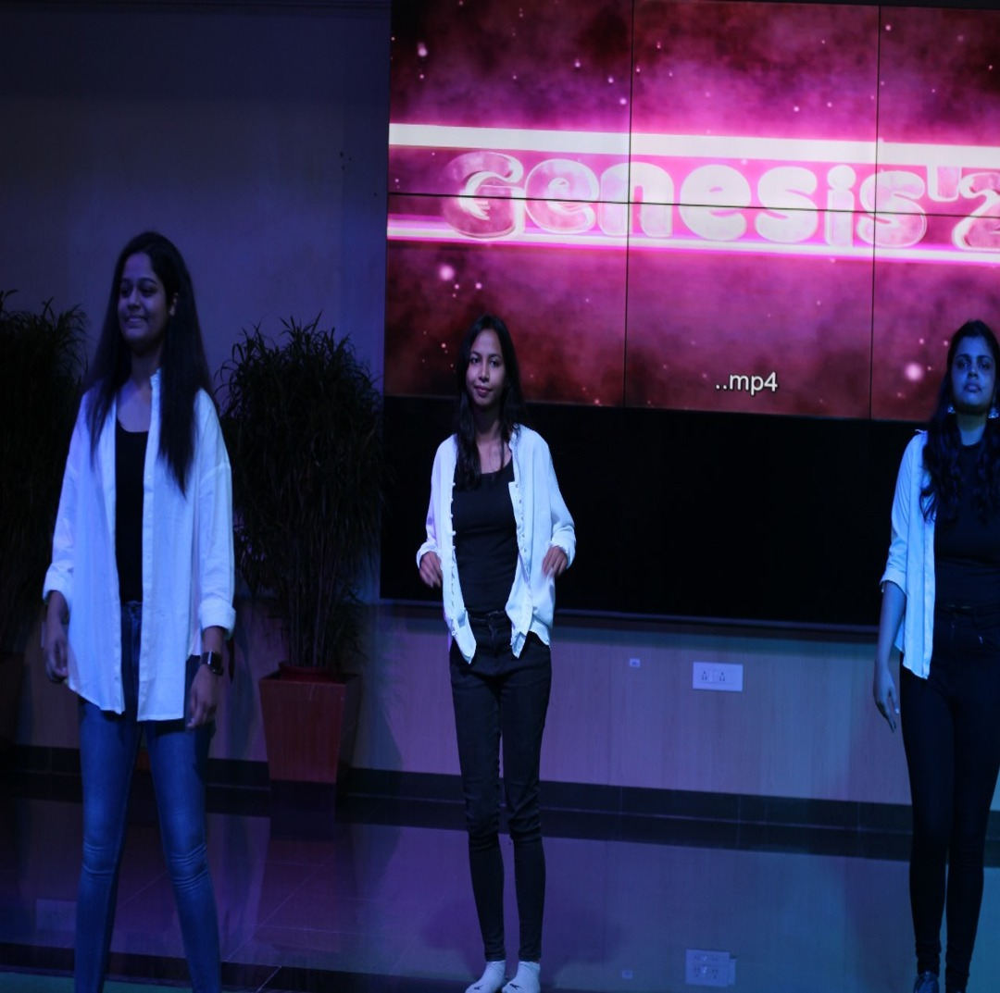
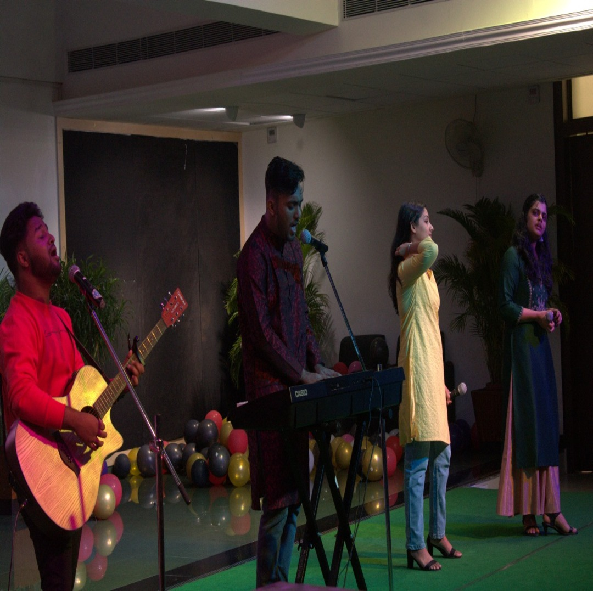

GENESIS'23 - THE FRESHERS PARTY
The welcoming party for the incoming batch (2023-27) was celebrated with enthusiasm and joy by the
senior batches.
Genesis'23 was a grand success, thanks to the collaborative efforts of the faculties
and the dedicated organizing committee. The event was carefully planned and executed,
creating a memorable experience for the incoming students.
Here's a brief overview of the key aspects that contributed to the success:
- Thorough Planning: The organizing committee demonstrated meticulous planning in every aspect
of the event. This included selecting a suitable venue, planning the schedule, and coordinating
various activities and performances.
- Faculty Support: The involvement and support of the faculties played a crucial role in the
success of the freshers party. Their guidance, encouragement, and participation in different
segments of the event added a sense of unity and camaraderie.
- Engaging Activities: The event featured a variety of engaging activities such as interactive
games, talent shows, and performances. These activities helped break the ice among the freshers
and created a vibrant and lively atmosphere.
- Student Participation: The active involvement of the freshers in planning and participating
in the event fostered a sense of belonging and ownership. This ensured that the party was not
only organized for them but also by them.
- Smooth Execution: The seamless execution of the event, from registration to the concluding
remarks, reflected the efficiency of the organizing committee. Clear communication and effective
coordination ensured that the program flowed smoothly.
- Memorable Moments: The creation of memorable moments, such as group photos, interactive
sessions, and welcoming speeches, contributed to the positive experience for the freshers.
These moments helped build a sense of community and friendship among the new students.
The success of "genesis23" was a result of careful planning, faculty support, engaging activities,
a well-executed theme, student participation, smooth execution, and the creation of memorable moments.
This collaborative effort created a positive and welcoming environment for the incoming students,
setting a positive tone for their academic journey in SCSE.





